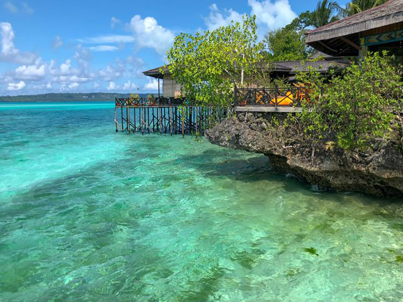

Pulau Derawan : Surga Tersembunyi Di Ujung Timur Pulau Kalimantan
Jika berkaitan dengan Indonesia sudah tidak jarang jika kita menyebutkan tempat wisata berupa pulau. Karena negara kita merupakan negara kepulauan, maka tak jarang tempat wisata indah yang ditemukan berupa pulau. Namun perairan yang mengelilingi pulau juga berbeda-beda. Ada yang berarus tinggi dan bahaya, ada yang berarus tenang dan aman, serta menampilkan keindahan bawah laut yang tidak ada tandingannya. Karena banyaknya arus dan aliran air yang melewati Indonesia, maka biota laut dan hewan serta tumbuhan yang ada sangat beragam. Salah satunya yang ada di pulau Derawan ini.
Pulau derawan letaknya tepat di kepulauan derawan, kecamatan derawan, kabupaten berau tentunya provinsi Kalimantan Timur. Untuk luasannya derawan cukup luas dengan topografi datar sehingga jangan khawatir dengan perjalanan atau daerahnya nyaman atau tidak. Derawan juga terletak di tengah laut dan luasnya hanya 1,3 hektar saja. Pulau Derawan memiliki 31 pulau dan terdapat beberapa pulau yang terdapat di semenanjung utara perairan laut yaitu pulau panjang, pulau raburabu, pulau samama, pulau sangalaki, pulau kakaban, pulau nabuko, pulau maratua dan pulau Derawan serta beberapa gosong karang yaitu gosong muaras, pinaka, buliulin, masimbung dan tababinga.
Wisata di Pulau Derawan
Karena utamanya pulau Derawan di kelilingi lautan maka tentu saja wisata andalan adalah pesona bawah laut yang sangat indah. Pesona bawah laut yang tidak mudah didapatkan dan tidak sering dijangkau oleh banyak orang menjadikan pemadangan pulau Derawan masih bersih. Pantainya memiliki hamparan pasir putih dengan barisan pohon kelapa di pesisir pantainya. Tentu saja hal ini memanjakan para wisatawan yang ingin bersantai di pantai atau pulau dengan pemandangan yang indah. Sejauh mata memandang hanya ada laut dan juga air biru. Namun dengan bentuknya yang pulau anda juga jangan khawatir, karena ada beberapa tempat wisata yang bisa dilakukan.
Jika anda penasaran seperti apa telur penyu dan budidaya tambak yang dilakukan oleh masyarakat Derawan , anda bisa mengunjungi langsung tempatnya. Disana anda bisa wisata edukasi dengan melihat konservasi penyu, dimana penyu dirawat lalu kembali dilepas ketika usianya sudah cukup. Hal tersebut mengurangi kemungkinan penyu mati ketika menetas. Ada juga anda bisa melihat kegiatan penangkapan ikan di kecamatan kepulauan Derawan yang memang mata pencaharian utamanya menangkap ikan di laut.
Seperti halnya daerah rawa lainnya, di Berau juga memiliki hutan mangrove. mangrove memang sangat penting karena dapat mencegah abrasi atau adanya pengikisan oleh air laut di daerah dataran dan pantai. Selain itu hutan Mangrove juga sudah sulit ditemukan. Umumnya hutan ini merupakan pusat lingkungan dan ekosistem dari banyak hewan dan tumbuhan. Anda bisa berjalan menyusuri menggunakan kapal tentunya untuk melihat seperti apa damainya didalam hutan Mangrove. namun harus hati-hati karena banyak hewan liar yang cukup berbahaya.

Transportasi Pulau Derawan
Untuk anda yang berasal dari luar Kalimantan Timur, tentu saja anda harus terbang dan mendarat di ibukota Kalimantan Timur yaitu Balikpapan. Kemudian dari Balikpapan anda bisa menuju ke Tarakan atau Ke Berau kembali dengan penerbangan. Jika lewat Tarakan tentu saja harganya lebih murah sedangkan dari Berau agak mahal. Ketika sampai di Tarakan maka penyebrangan memakan waktu agak lama sedangkan dari Berau penyebrangan tidak lama dan banyak kapal yang melayani.
Jika anda menempuh via darat maka anda bisa menuju ke Balikpapan dari kota anda. khusus jika anda dari Samarinda maka anda bisa menggunakan travel dari Samarinda ke Tanjung Redeb sebesar 300.000 dan tanjung redzeb ke tanjung batu sebesar 100.000 dari sana anda bisa menggunakan speedboat saja sebesar 100.000 rupiah. Untuk harga penerbangan dan lainnya semua tergantung pesanan anda ketika liburan atau tidak, atau ketika musim ramai atau tidak.